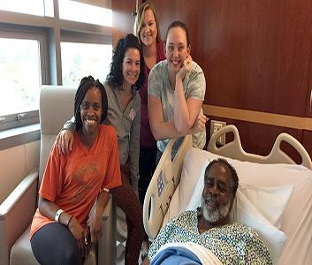

Patient Success Stories
Services/Success Stories Cleveland Barber “Pays It Forward” and Becomes Advocate for Minority Men’s Health :-
Cleveland barber Waverly Willis talks about everything with his clients. But it wasn’t always that way.
Men stopping in for a haircut would talk about the weather, Cleveland sports teams, their relationships and all kinds of personal stories — but not their health. Sometimes Waverly would see clients’ families at church and learn that a client was in the hospital or had died.
“I decided we needed to change the dialogue a bit and have some serious conversations, too,” says Waverly, who began offering clients free blood pressure screenings and healthcare advice from volunteer nurses in his barbershops.
He began encouraging clients to get regular medical checkups, just like he does. And he started advocating for Cleveland Clinic’s Minority Men’s Health Fair, which has offered free screenings for prostate cancer, blood pressure, cholesterol, kidney function, diabetes, heart disease, hepatitis C, HIV and more since 2002.
In 2014, Waverly attended the health fair to show his support. On a whim, he got a free screening too, never expecting it to show anything.
However, Cleveland Clinic found something his other doctor had missed: microscopic traces of blood in his urine, also known as Hematuria.
Four days later, Waverly was back at Cleveland Clinic, where he learned he had a cancerous mass in his right kidney. He was stunned. He didn’t have any symptoms of kidney trouble, such as back pain and fever. He hadn’t seen any blood in his urine.
Within two weeks of the health fair, a Cleveland Clinic surgeon removed Waverly’s cancer along with his entire right kidney. Waverly will continue to have CT scans to make sure the cancer doesn’t return. He also will need to keep his blood pressure low.
Now Waverly has more than a message for the men in his barbershops. He has a testimony about the importance of routine screenings and not waiting for symptoms. The Minority Men’s Health Fair saved his life.
According to Charles Modlin, MD, MBA, the Cleveland Clinic kidney transplant surgeon and urologist who started the fair, far too many minority men have serious health issues because they are less likely than other men to visit a doctor for regular checkups.
“Minority men lag when it comes to healthcare for a variety of reasons, some genetic but many related to socio-economic factors as well as often a lack of awareness of the importance of undergoing routine preventive health screenings even if they don’t have any pains or symptoms,” says Dr. Modlin, who also is founder and director of Cleveland Clinic’s Minority Men’s Health Center. “We must take more pragmatic steps to educate and encourage them to seek medical support on a regular basis.”
Since his kidney surgery, Waverly has improved his health habits even more. Over the past few years, he lost 180 pounds and no longer requires blood pressure medication.
“I’m very thankful I had that test,” says Waverly. “That’s a testimony about going to the doctor that I share with my customers every day.”
Pictured: Waverly Willis (left) credits Dr. Modlin (right) with saving his life.
Source : Cleveland Clinic
Other Stories :-
1-Daughter Gives Dad a Priceless Gift for Fathers’ Day :- Fathers’ Day 2018 took on a whole new meaning for Cleveland Clinic Florida patient Ronald Corbin of Port St. Lucie, Florida. The retired Martin County High School Choral Director received a priceless gift – a new kidney from his daughter, Candice Corbin who happens to also be one of his former students.......... See More
2-Rehabilitation Therapies Help Former Athlete Regain Strength and Mobility :-Steve Cross, from the Portage Lakes area in Coventry Township, has always been an all-in athlete. Whether playing high school and college football, boxing as a Golden Gloves amateur or power lifting, he’s never done anything half way. And despite a devastating back injury, he refuses to give up now. “Football led to a full college scholarship in Boston. As a linebacker, I took a lot of hits,” says Steve. “A head injury during a college game ended my ........... See More